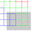
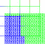

For each point in the sink grid, the enclosing element is found from the source grid. The attribute value associated with the sink point is assigned the attribute value from the associated source element.
The output consists of GMV files.
The input consists of AVS and GMV files. The input deck for this example is lagrit_input_map
The objective is to test the ability of interpolate to find the enclosing element in a coarse hex grid associated with each point of a refined triangle grid. The itetclr value of each found element is copied to the sink imt attribute.
The left image shows the source hex grid with itetclr values 1(blue), 2(green), and 3(red). The high resolution sink triangle grid is in the image to show relative location.
The right two images show the sink grid after using interpolate to color sink imt1 from the source itetclr values. The top nodes of the sink tri grid are located within two source elements, on shared edge. A single element is chosen by the tiebreaker option which selects either the mininum or maximum source element value.
The middle image shows the result of using default tiemax option.
The right image shows the result of using the tiemin option.
|
source and sink grids
|
tiebreaker tiemax
|
tiebreaker tiemin
|
Demo 2 shows how the flag option is used for points outside the source grid. The sink grid has been translated so that part of the grid lies outside the source grid. The left image shows the course source grid and the refined sink grid together to show relative position. The source grid itetclr values are 1(blue) thru 3(red).
The middle image shows the sink grid after it has had imt values assigned from source itetclr values using the flag option plus1. The sink points located outside the source grid were found not to have any enclosing elements. These points are flagged with the value of maximum itetclr value, plus one, which in this cas e is 4.
The image on the right is the same intrp run, except that outside points are flagged with the nearest point imt1 value of the source grid. Note that the keyword nearest must be followed with a node attribute name of source values to be used for the flagged points.
|
source and sink grids
 |
flag with plus1

|
flag with nearest
 |
Demo 3 shows how to map values from source elements to sink elements (centroid point). Image on the left shows the hex source grid colored by element id numbers 1 through 36. The image on the right is the resulting tetrahedra sink grid with elements colored from the source grid. If the sink attribute is element type, centroids for each element are calculated and used as the sink points. The sink image has the nine materials exploded for better viewing.
Source hex grid

|
Sink and Source grids

|
Sink tet grid

|
{kind=link}
{kind=link}